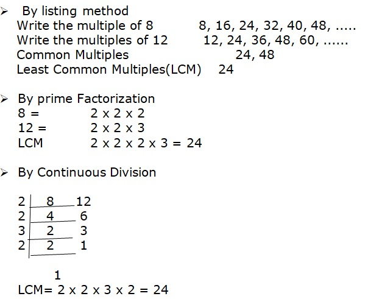
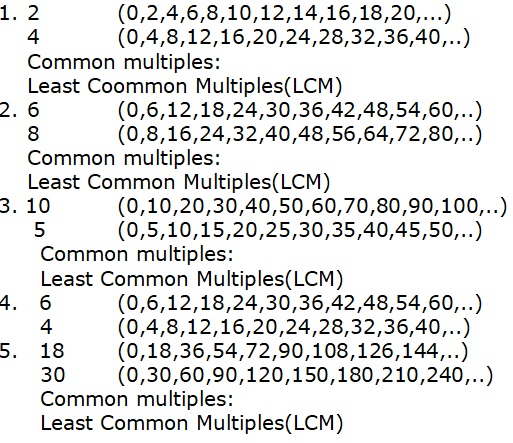
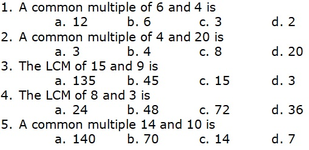

EXPLORE
Carina bake puto. She wants to pack them in boxes of 8 and 12 pieces. What is the number of pieces of puto that she can pack using the boxes?
To solve the problem, you need to find the least common multiple or LCM of 8 and 12.
Here’s how you do it.

• Notice that 24 is the least common multiple or LCM of 8 and 12. Therefore, the smallest number of pieces of puto that can be packed using the boxes is 24.
• You do not include 0 when dealing with common multiples.
Get Moving
A. Find the common multiples and least common multiple (LCM) of each pair of numbers. Some of the multiples are already given.
B. Write the letter of the correct answer in your notebook.
Apply Your Skills
Answer the following questions and write the correct answers in your notebook.
1. Find the first three common multiples and LCM of 16, 12, and 8.
2. Ferdie works as a food crew every three days , while Angels attends to her job as a cashier every other day.If Ferdie and Angel start on the fifth day of the month, when will both of them report for work together?
3. The pupils of Dupag Elementary School collected used plastic bottles for recycling. They arranged the bottles in boxes of 5 and 8. What is the least numbers of bottles the pupils gathered in all?